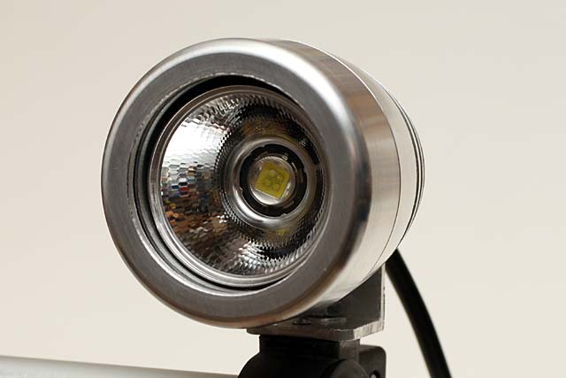
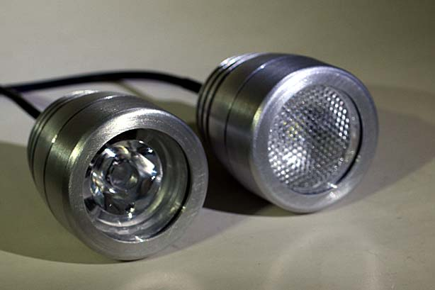
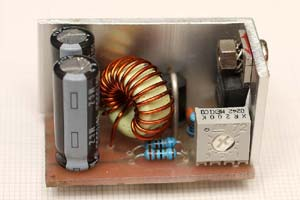
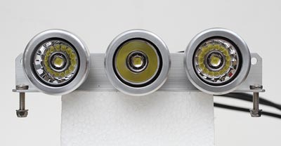
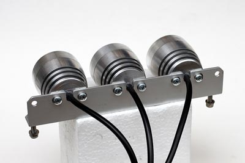
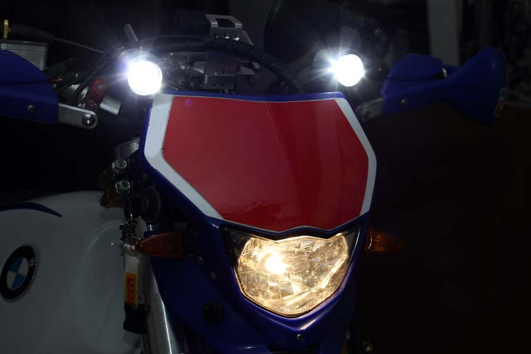
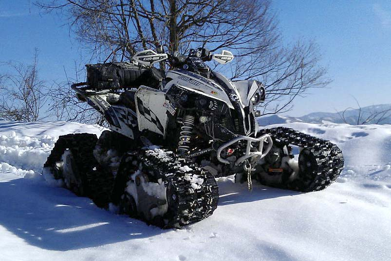

LED & illuminazione
Lampada BK3/S con Power led
Faro pro per Moto, Enduro, Cross, Quad, ATV, 4X4, Speleo, Sub Led lamp di R.Chirio
Proiettore con led, tenuta stagna per impiego professionale, MTB estremo, speleo e sub moto Enduro Quad - KTM Honda Suzuki Yamaha

- La chiusura è stagna, adatto per MTB estremo, moto Enduro, Quad, illuminazione speleo e ripresa subacquea fino a -10mt
- Adatto per Led da 5 a 15W, utilizzare driver SW2800 ingresso 12V
- Gruppo in alluminio tornito CNC. Misure: diametro 48mm lunghezza 50mm peso 110gr.
Non è omologato per la circolazione stradale, solo per gare Off-Road.
|
BK3/S KIT 2 x led CREE XM-L2 T2 |
Gruppo illuminante da competizione MTB, enduro, quad, ATV, completo di 2 faretti CREE XM-L2 T2 con lenti 10° e 29°, regolatore SW2800 Hi/Lo |
Alimentazione 12V |
|
|
BK3/S KIT 1 x led CREE XM-L2 T2 |
Gruppo illuminante da competizione MTB, enduro, quad, ATV,, completo di 1 faretto CREE XM-L2 T2 con riflettore 10°, regolatore SW2800 Hi/Lo |
Alimentazione 7-12V |
{kind=link}
{kind=link}

DRIVER SW2800

Driver SW2800.
- Adatto a pilotare 1 o 2 led 10W.
- Uscita corrente costante regolabile da 300 a 3000mA.
- Ingresso 9-16V.
- A richiesta versione 24V
ALLESTIMENTO SPECIALE


Allestimento speciale per Moto Enduro e Quad composto da 3 faretti PowerLed con riflettori, 1 da 15° e 2 da 29°, adatto per gare Off-road.
Alimentazione batteria 12V consumo 33W resa luminosa = 3600Lumen (equivalente a circa 300W alogena)


© Roberto Chirio: all rights reserved.